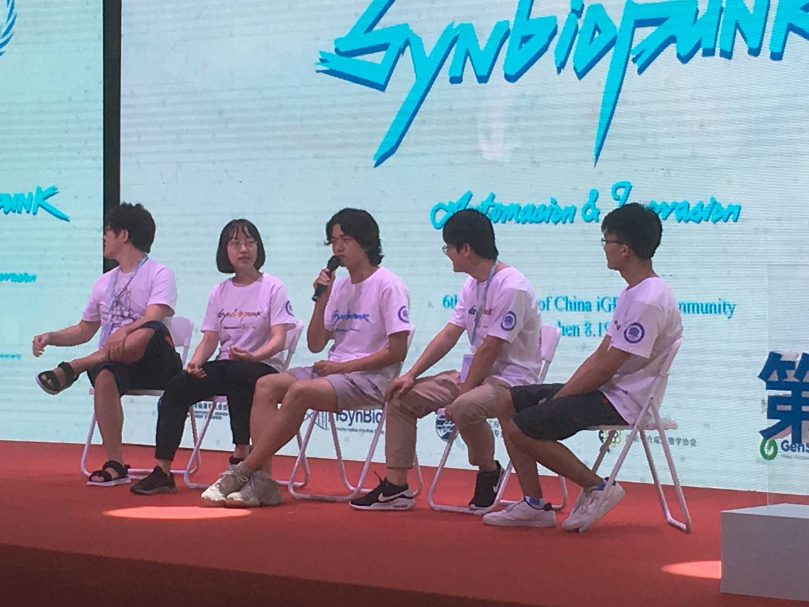

Collaborations
UESTC
Since our project is based on the database, our project's first step is to collect data
from multiple databases. From the very beginning, we took a look on the results of IGEM competition in 2018.
Luckily, we found that the UESTC team had already done the work of collecting data from various databases to
build their project, BioMaster.
 Our work is built on the database, and UESTC-Software does a great job on the database, so we proposed collaboration with them. From their project, we predicted some prominent promoters and matched the resulting promoters to our corresponding responses, and the resulting responses would be based on our recommended algorithm to analyze metabolic balance in our model. Their results predict great output on our model, and we link the results to their database to validate and refine their projects.
Our work is built on the database, and UESTC-Software does a great job on the database, so we proposed collaboration with them. From their project, we predicted some prominent promoters and matched the resulting promoters to our corresponding responses, and the resulting responses would be based on our recommended algorithm to analyze metabolic balance in our model. Their results predict great output on our model, and we link the results to their database to validate and refine their projects.
Figure 1: UESTC biomaster

Through the way of developing the project, we also contributed our biobricks to their project which they might need. Their project was updated as well. During the process of our communication, both of our project were upgraded. This kind of cooperation is profound and coordinated in software engineering, which significantly enhances the user experience.
Figure 2: Communicating with UESTC
SYSU
In June, we visited SYSU and had a meeting with their iGEM team members. We communicated with our team projects and gave helpful suggestions to each other. We stated that our work to optimize our database, which was at a grand scale and then linking the output to FBA’s input. However, the students and professor from SYSU pointed out that our idea about optimizing massive databases was not targeted for Synthetic Biology. There was a bias that our work done to optimize the databases will distract us from designing FBA workflow and its efficiency.
 Mutually, we listened to their project carefully, asked several questions, and had an overall understanding. Knowing that their work would relate to the calculation of Metabolic equilibrium analysis, we recommended our project, and they said they would be glad to use our software.
Mutually, we listened to their project carefully, asked several questions, and had an overall understanding. Knowing that their work would relate to the calculation of Metabolic equilibrium analysis, we recommended our project, and they said they would be glad to use our software.
Figure 3: Meeting between SYSU team
Tongji
The software should get rid of the virus just as the virus will quickly destroy an organism. But besides the attacking virus, we software team still must complete the project without any vulnerability existed. It’s necessary that we software teams need to test the program with each other. When our team’s elite programmer Keyu Tao helped test the code of Team Tongji, he found a significant vulnerability. Entering some specific characters within some particular interface search box can conduct SQL injection. After our warning and detailed document, they improved their codes and fixed the bug.
SJSU
In June, we visited SYSU and had a meeting with their iGEM team members. We communicated with our team projects and gave helpful suggestions to each other. We stated that our work to optimize our database, which was at a grand scale and then linking the output to FBA’s input. However, the students and professor from SYSU pointed out that our idea about optimizing massive databases was not targeted for Synthetic Biology. There was a bias that our work done to optimize the databases will distract us from designing FBA workflow and its efficiency.
After the first period of development, we cooperated with SJSU to test projects for each other. We gained much useful advice, with which we improved our projects. They said we had a very friendly UI; our web design was concise, and the data content was abundant. Our project made high integration between biobricks of iGEM and FBA analysis, so it’s convenient to make better research of the metabolic flux. Also, they gave us some feedback that we still had some defects, and gave us some advice. First, the user should enter a JSON file with metabolite and coefficient to create a reaction. However, it’s unfriendly for users to create JSON files manually. Besides, considering there are plenty of models in our well-integrated database, people don’t need to enter the model id manually but can choose from the known models.
Figure 4: Feedbacks from SJSU after first test period
SDU
We also helped a girl from the SDU who had trouble in creating animation by software
during the time when we attended the CCIC meeting.
USTC
The USTC team is the other team of our school, which focuses on biology, and most of their members majored
in biology. Therefore, we communicate a lot throughout the whole project.
 Our team, together with the USTC team, has conducted a 4-day experimental training in the lab, which aims at
helping more students to use our tools effectively and efficiently. Although most of our software team
members majored in computer science, we know more clearly about how the basic experiment is conducted and
what we can do to help synthetic biology researchers to improve their working efficiency through the process
of doing biology experiments.
Our team, together with the USTC team, has conducted a 4-day experimental training in the lab, which aims at
helping more students to use our tools effectively and efficiently. Although most of our software team
members majored in computer science, we know more clearly about how the basic experiment is conducted and
what we can do to help synthetic biology researchers to improve their working efficiency through the process
of doing biology experiments.

What's more, Pengcen Jiang, a member form the USTC team, has helped us how to use cobra tools and gave us a lot of suggestions on how to convert our data into practical meaning.
After having built our project, we invite the USTC team to test our tools. They give us a lot of advice on how to upgrade our project. Thanks for their feedback.
Figure 5: Having a meeting with USTC team
Figure 6: Conducting experimental training
What's more, Pengcen Jiang, a member form the USTC team, has helped us how to use cobra tools and gave us a lot of suggestions on how to convert our data into practical meaning.
After having built our project, we invite the USTC team to test our tools. They give us a lot of advice on how to upgrade our project. Thanks for their feedback.